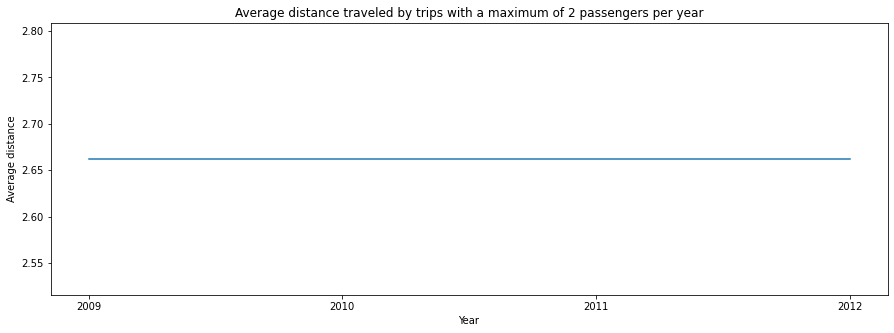
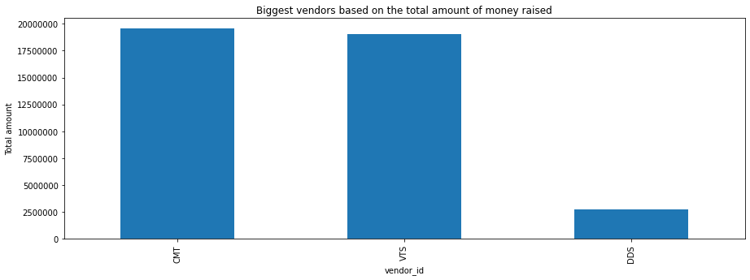
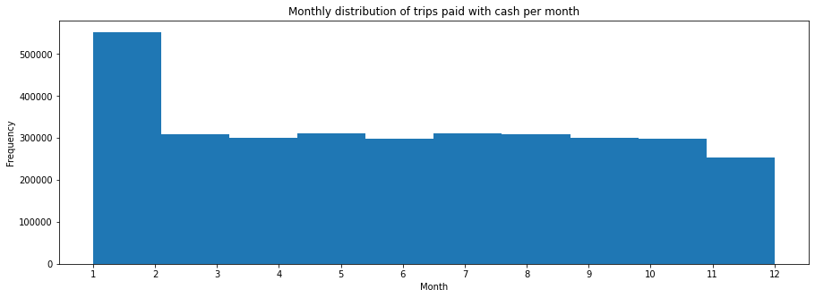
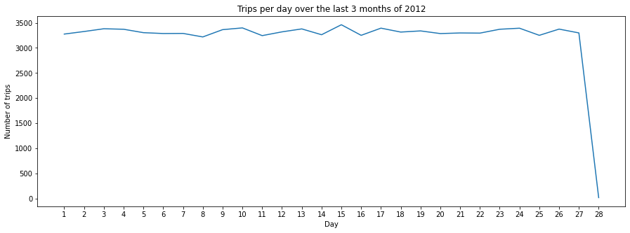
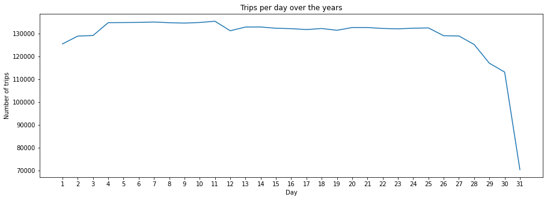
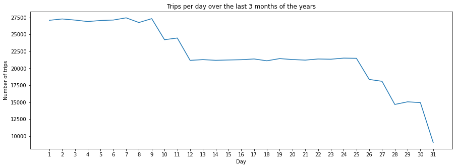

NYC Taxi trips Analysis
About the data
The dataset used on this study consists in 4M of records which describe NYC Taxi trips during the years of 2009 to
2012.
Results
After some analysis the data has shown that:
-
The average distance traveled by trips with a maximum of 2 passengers were, approx., 2.66m.
The same value were observed through years, as shown by the graph below:

-
The 3 biggest vendors based on the total amount of money raised were Creative Mobile Technologies
(CMT), VeriFone Inc (VTS) and Dependable Driver Service, Inc (DDS). But, as
seen in graph, CMT and VTS
gathered the big numbers: 19549084.28 and 19043434.00, respectively.

-
Regarding the trips paid in cash, in January the number of trips practically doubles, in relation
to the other months. Therefore, it is possible to observe an indication of
seasonality in the data, with an
increase of trips at the beginning of the year decrease at the end.

-
The 28th of the last three months of 2012 is the day with the least number of trips, and on the 30th and 31st the
data does not inform any trip. Regarding the population, it is possible
to notice that in the last days of
the year the number of trips decreases, while between days 4 to 10 these increase. This fact can be linked to the
population's cash flow.



Author: Cecília Regina Oliveira de Assis